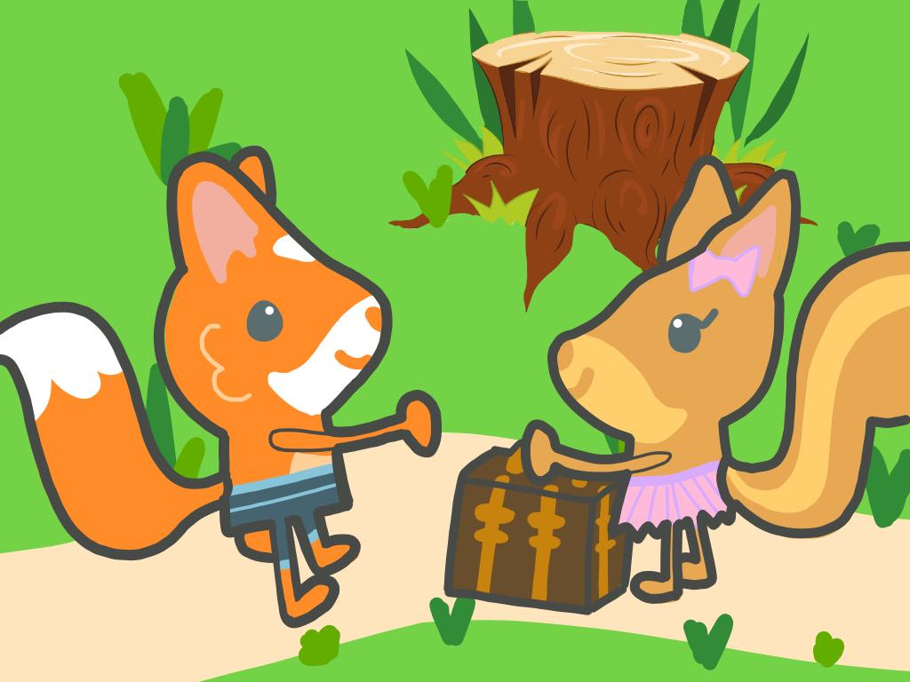

Felix Fox was on his daily afternoon stroll, when he saw a large group of animals collected around something. Curious to see what was happening, Felix Fox pushed through the crowd until he was at the center. What he saw was so horrifying, he couldn’t even speak. The Squilly squirrel family was standing with tiny suitcases in their furry arms looking at what used to be their home. In front of them lay a tree stump. Sanjay Squirrel was carving a heart into the stump with a twig, while crying.
“Wah wah wah boo hoo boo hoo”
Mama squirrel was struggling to stay strong. She looked around at her neighbors: Harvey the Hedgehog, the Forest Hills ant colony, Rafael the Racoon, Felix Fox, Cheng the Chipmunk, Juan the Anteater, and many more.
“Please help my babies and I, we are homeless! Please, we will give you a good share of acorns. Someone has cut down the home that my babies grew up in. We have lost almost everything”, Mama squirrel exclaimed in her southern accent.
One by one, they all made excuses and made their way back home.
“My wife, Juanita, is pregnant with our baby, Juanito. We can’t take anyone else right now. Sorry my friend, good luck!” said Juan the Anteater.
“No offense, but if you move in with us, you will trample our population” said the queen ant of the Forest Hills ant colony.
“Hmph, when our family was going through a rough time finding trash to eat, you didn’t give us any acorns. Why should I help you now?”, Rafael the Racoon said angrily before stomping away with his family.
“Sorry… but our kinds don’t really get along very well.” said Cheng the Chipmunk.
Looking around, Mama Squirrel lost all hope, as she could see that there was only one neighbor left. Felix Fox.
Felix Fox nervously said, “Well Mama Squirrel, my family would be happy to take you in during this time of need.”
Mama squirrel thought for a moment. She had heard that foxes in general were sly creatures. Of course, she had never had any problems with this fox family when they had interacted with each other from afar, but she still was a little suspicious. However, her hands were tied so she reluctantly accepted his offer.

Little did she know that they would soon become great friends with each other’s families.
“Ugh, I can’t take this anymore! It is just too hot”, Grandma Fox exclaimed fanning her face.

The animals of the forest were exhausted because there had been no rain for the past 4 months! They had to work tirelessly in the heat to get food for their children, with no relief from the rain. The forest plants were not growing very well, and the food had decreased so much. Everyone was starving and thirsty, since the forest rivers had dried up.
“When I was growing up, it was never this hot. Just ask Great Grandpa Francis! Each season was different. None of this ‘always hot’ nonsense”, said Grandma Fox.
The animals gathered around her, curious to see what had happened over the years. They were younger than her, and had seen less change over time. They each took turns guessing what the cause for this change was.
“Is it magic?”, said Sanjay the Squirrel.
“No Sanjay, it’s not magic”, said Grandma Fox
“Is it because of aliens?”, said Felix Fox
“No honey, it’s not because of aliens”, Grandma Fox said once again.
“Unfortunately everyone, it is because of us. When we go to the Forest Hill Market, what do we buy for our vegetables? Fertilizer.”
“The fertilizer that we use is very bad for the environment. Over time, the forest will become hotter and drier, because we have hurt the environment” said Grandma Fox.
“So what can we do Grandma Fox?” asked Rafael the Racoon.
“Well, Rafael, first of all we can stop using these dangerous fertilizers, and we can find something that is organic and good for the environment. Then we can go to other forests and start educating other forest animals who made the same mistake as us. If we don’t change something, the environment will change even faster” answered Grandma Fox.
And with that message, they all got to work with hopes to see cooler temperatures and more rain.